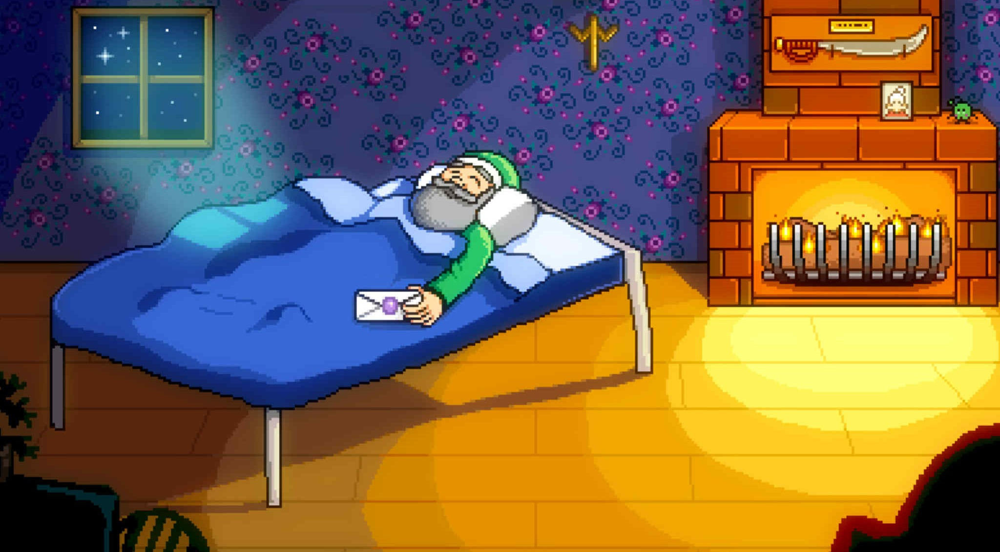
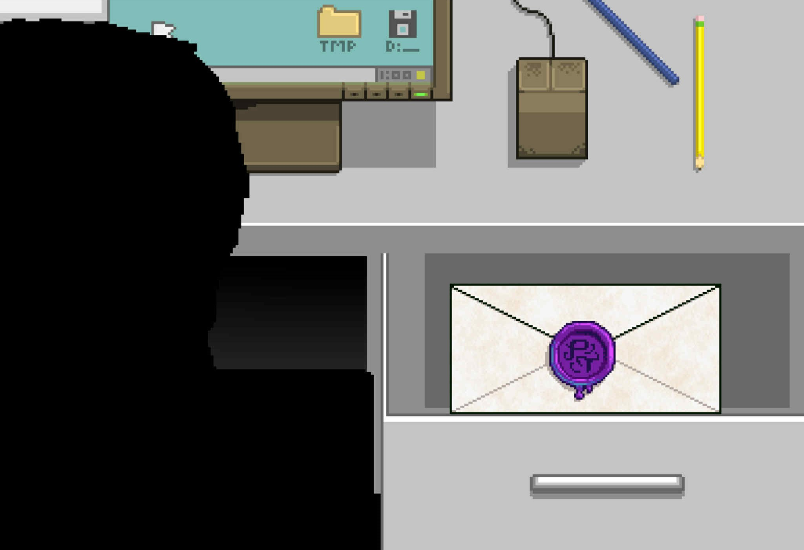
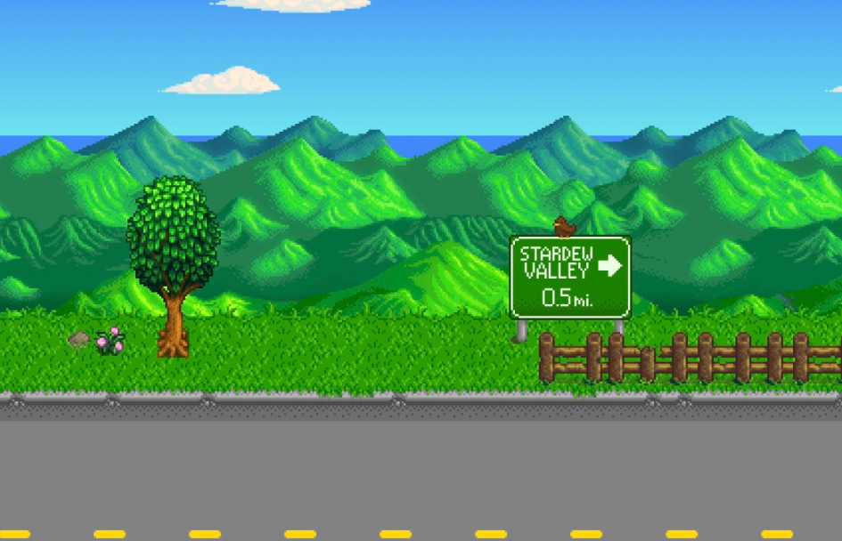

THE BACKSTORY
Before your grandpa’s passing, his final wish was for you to receive a sealed envelope in his hand.
However, he requests that you only open it during a moment when you are in the lowest of spirits.

Grandpa's Death

Your Job: Joja Corporation Employee
A few years later, you are employed at Joja Corporation. For a while, you have been tirelessly working in cramped, dirty office cubicles— in complete isolation. This drives you to the point where you have felt like you’ve had enough of this lifestyle. After spiralling into deep sorrow, you decide to open your office drawer to find Grandpa’s letter.
You open Grandpa's final letter, which reads:
"If you're reading this, you must be in dire need of change.
The same thing happened to me, long ago. I'd lost sight of what mattered most in life...
real connections with other people and nature. So I dropped everything and moved to the place I truly belong.
I've enclosed the deed to that place... my pride and joy: [Farm Name] Farm.
It's located in Stardew Valley, on the southern coast.
It's the perfect place to start your new life.
This was my most precious gift of all, and now it's yours.
I know you'll honor the family name. Good luck.
Love, Grandpa"

Grandpa's Last Letter
